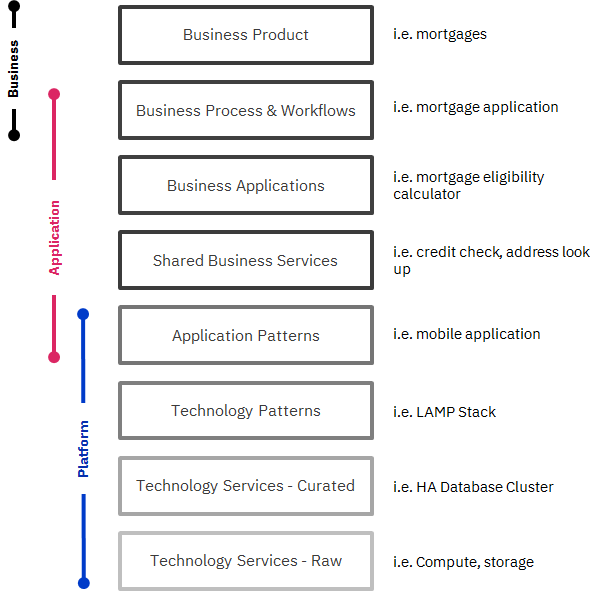

Services Portfolio
Table of Contents
What services does the next generation IT organisation offer?
The service portfolio outlines what is offered, developed and supported across the organisation using a common taxonomy, language and service definition. It covers all products and services across the organisation in a clear and transparent way.
Why is it important?
- Provides clarity on what products and services are offered, develop and managed within the organisation and by suppliers, with identified internal product owners
- Clearly defines the role between and application and platform engineering teams and establishes clear ownership
- Creates clear line of sight between business services and underlying technology simplifying supportability and operations
- Helps avoid duplication of functionality and accelerates development through patterns that are architected and built with the necessary security and compliance approval
- Make services more consumable by describing them in a common way, make costs transparent, presenting in a curated catalogue and automating access and provisioning where possible
- Helps manage the lifecycle of services driving investment decisions, architectural choices and service strategy
| Target Operating Model - Service Portfolio |
|---|
|  |
Key principles for establishing Service Porfolios
| Principle | Description |
|---|---|
| Single & Hybrid Offering | - The same offering must be delivered everywhere. - Leverage capabilities from Private and Public Cloud Providers and facilitate Exit Strategies. |
| Technology Agnostic | - Focus on the abstraction and the interface defined by the service and the value which gets delivered rather than particular implementations that might be supporting it. |
| Standardized & Prescriptive | - Consumer applications and services rely on the set of standardized set of Cloud Platform Services that have been published for each customer. - Each service might require a number of other mandatory service components (either by policy or as part of a bundle) in order to meet other key objectives and requirements. |
| Managed & Platform-centric | - As opposed to Workload centric offering, a Platform-centric offering provides Cloud Services that presents building blocks that can be used by consumer applications and services. - A managed Cloud Service Portfolio must ensure and deliver: - Value that contributes to fulfill the vision and the strategy - Enterprise grade SLAs. |
| Differentiated | - A Single, Managed, Secure and Hybrid Multicloud offering presents a distinctive value chain that goes way beyond the one obtained by just doing a pass-through of technology proposals from different CSPs. |
| Compelling & Competitive | - The Service Offering must be compelling and competitive so that customers are willing to adopt it - The CCC must make sure the solution proposed as a Service Offering is cost effective and cost efficient. |
| Agile | - The Service Definition process must follow a regular cadence of small, frequent and incremental iterations. - Prioritization efforts must take into consideration a positive feedback loop with customers and prospects. |